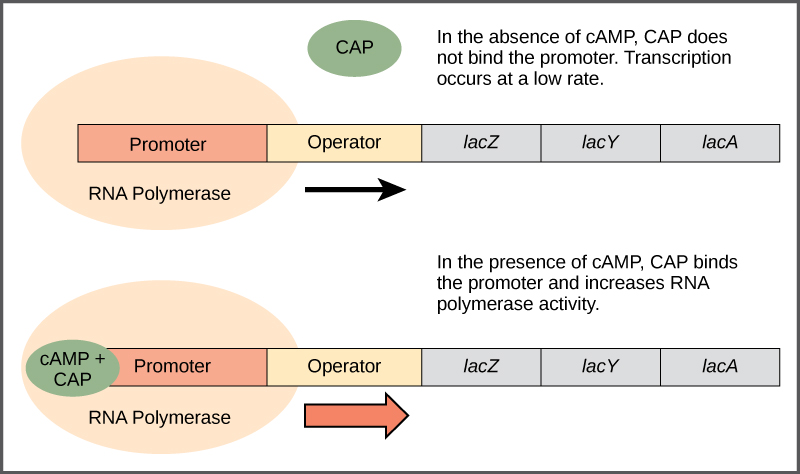
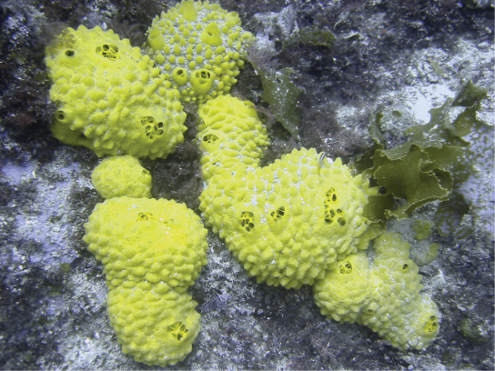
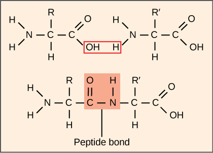
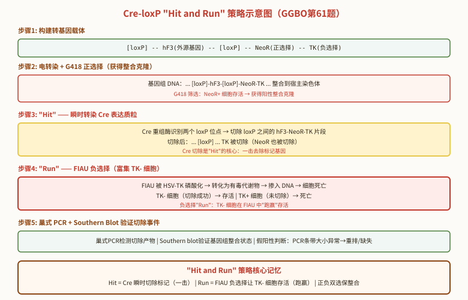

基因表达调控
一、原核基因表达调控——lac操纵子回顾
lac操纵子是原核基因表达调控的经典模型，受双重调控：
- 负调控（LacI阻遏蛋白）：无乳糖→LacI结合O_lac→转录关闭。乳糖/IPTG→LacI失活→转录开启。关键突变型：I⁻（组成型，隐性）、Iˢ（超阻遏，显性）、O^c（操纵基因突变，顺式显性）。
- 正调控（CAP-cAMP）：葡萄糖缺乏→cAMP升高→CAP-cAMP结合CAP位点→激活转录。葡萄糖存在→cAMP降低→转录减弱（分解代谢物阻遏）。
Jacob和Monod的操纵子模型（1961年）开创了基因调控研究领域，获1965年诺贝尔奖。

二、trp操纵子与衰减子
trp操纵子受两种机制调控：
- 阻遏调控：TrpR阻遏蛋白（apo-repressor）与Trp结合→活性阻遏蛋白→结合操纵基因→关闭转录。终产物反馈阻遏的经典范例。
- 衰减子调控：原核特有的转录终止调控机制。前导序列含编码前导肽的开放阅读框（含2个连续Trp密码子）和可形成替代二级结构的4个区域。
衰减子机制：Trp充足→核糖体快速翻译前导肽→区域3-4形成终止子发夹→转录终止。Trp缺乏→核糖体在Trp密码子处停顿→区域2-3配对→3-4终止子不能形成→转录继续。衰减子调控提供约10倍调控范围，与阻遏调控协同达~700倍。
色氨酸操纵子（trp operon）核心概念补充：trp操纵子是阻遏型操纵子的典型代表，与lac（诱导型）形成对比。trp操纵子的结构基因为trpEDCBA，分别编码色氨酸合成途径中的5种酶。其调控特点：
- 阻遏调控（粗调）：TrpR阻遏蛋白 + 辅阻遏物（色氨酸本身）→ 活性阻遏蛋白结合trpO → 阻止转录起始。这是终产物反馈阻遏，约70倍调控范围。
- 衰减子调控（细调）：前导区trpL含4个互补序列区（区域1/2/3/4），可形成两种发夹结构。Trp浓度高→3-4终止发夹→转录提前终止；Trp浓度低→2-3抗终止发夹→转录通读。约10倍调控范围。
- 两级调控协同：阻遏 + 衰减子协同达约700倍调控范围。阻遏调控在转录起始水平，衰减子在转录延伸/终止水平。


转录与翻译的偶联（原核特有）：在原核生物中，转录和翻译在同一个空间（细胞质）同时进行——mRNA尚未转录完成，核糖体就已开始翻译。这种转录-翻译偶联是trp衰减子调控得以实现的结构基础（核糖体的位置直接影响mRNA二级结构）。在真核生物中，转录在核内、翻译在胞质，两者时空分离，故真核无衰减子调控。
三、真核基因表达调控
真核基因表达调控在多个层次上进行：染色质水平（表观遗传）、转录水平（最重要）、转录后水平（mRNA加工/运输/稳定性）、翻译水平和翻译后水平。
转录水平的调控元件：
- 顺式作用元件（Cis-acting Elements）：DNA序列，包括启动子（TATA框/CAAT框/GC框）、增强子（enhancer，可远距离作用，方向不依赖）、沉默子（silencer）、绝缘子（insulator，阻断增强子-启动子通讯）、座位控制区（LCR，调控基因座整体表达）。
- 反式作用因子（Trans-acting Factors）：转录因子蛋白质。包括通用转录因子（GTF，TFIIA/B/D/E/F/H）和特异性转录因子（激活子/抑制子）。DNA结合结构域（DBD）常见类型：锌指（Zn finger）、螺旋-转角-螺旋（HTH）、碱性亮氨酸拉链（bZIP）、碱性螺旋-环-螺旋（bHLH）。
四、表观遗传学
表观遗传学（Epigenetics）研究不改变DNA序列但可遗传的基因表达变化。主要机制：
- DNA甲基化：胞嘧啶C5位甲基化（5mC），主要发生在CpG二核苷酸。CpG岛（CpG island）通常位于基因启动子区，其甲基化状态与基因沉默相关。DNMT（DNA甲基转移酶）：DNMT1（维持甲基化，识别半甲基化DNA）、DNMT3A/3B（从头甲基化）。TET蛋白（ten-eleven translocation）催化5mC→5hmC→5fC→5caC→切除→主动去甲基化。
- 组蛋白修饰：核心组蛋白（H2A/H2B/H3/H4）N端尾部的翻译后修饰。包括乙酰化（HAT/HDAC，激活转录）、甲基化（H3K4me3→激活，H3K27me3→抑制，H3K9me3→异染色质）、磷酸化（H3S10ph→有丝分裂染色体凝聚）、泛素化（H2AK119ub→Polycomb沉默）等——"组蛋白密码"假说。
- 染色质重塑（Chromatin Remodeling）：ATP依赖的染色质重塑复合体（SWI/SNF、ISWI、CHD、INO80家族）利用ATP水解能量移动核小体位置或改变核小体结构，调节DNA可及性。
五、RNA干扰与CRISPR-Cas9
RNA干扰（RNAi）：由双链RNA（dsRNA）触发的序列特异性基因沉默机制。Fire和Mello于1998年发现（获2006年诺贝尔奖）。
- siRNA途径：外源长dsRNA→（Dicer，RNase III家族内切酶）→21-23nt siRNA双链→与Argonaute蛋白（Ago2）结合→其中一条链（引导链）保留在RISC（RNA-induced silencing complex）中→引导RISC识别并切割互补mRNA（siRNA与mRNA完全配对→Ago2催化切割）。
- miRNA途径：内源pri-miRNA→（Drosha/DGCR8）→pre-miRNA（~70nt发夹）→输出到细胞质→（Dicer）→~22nt miRNA双链→RISC→通常与靶mRNA的3'UTR不完全配对→翻译抑制+mRNA去腺苷酸化/降解。一个miRNA可调控数百个靶基因。
CRISPR-Cas9：源自细菌适应性免疫系统的基因组编辑技术（Charpentier和Doudna，2020年诺贝尔化学奖）。Cas9核酸酶在sgRNA引导下识别靶DNA（PAM序列NGG+20nt互补序列）→产生DNA双链断裂→细胞通过NHEJ（产生indel→基因敲除）或HDR（提供修复模板→精确编辑）修复。
六、本节核心总结
七、发育遗传学与基因调控网络
发育遗传学（Developmental Genetics）研究基因如何调控发育过程。经典模型：
- 果蝇早期发育的基因层级：母体效应基因（Maternal Effect Genes）→间隙基因（Gap Genes，如hunchback, Kruppel）→成对规则基因（Pair-rule Genes，如even-skipped, fushi tarazu）→体节极性基因（Segment Polarity Genes，如engrailed, wingless）→同源异型基因（Homeotic Genes，如Hox基因簇）。这一层级展示了从粗到细的发育模式建立过程。
- Hox基因：含同源异型框（homeobox，编码60个氨基酸的DNA结合结构域——同源异型结构域）。在染色体上排列顺序与沿身体前后轴的表达顺序一致（共线性，colinearity）。果蝇有一个Hox基因簇（ANT-C+BX-C），哺乳动物有四个Hox基因簇（HOXA/B/C/D），由原始Hox簇经两轮全基因组复制产生。
信号通路与基因调控：
- Wnt/β-catenin通路：无Wnt时→β-catenin被降解复合体（Axin/APC/GSK3β）磷酸化→泛素化降解。Wnt结合受体Frizzled→Dishevelled抑制降解复合体→β-catenin积累→入核→与TCF/LEF转录因子结合→激活靶基因。APC突变→β-catenin持续激活→结直肠癌。
- Notch通路：信号细胞Notch配体（Delta/Serrate/Lag-2）→受体细胞Notch受体被切割→NICD（Notch胞内结构域）释放→入核→与CSL转录因子结合→激活靶基因。Notch信号通过侧抑制（lateral inhibition）决定细胞命运。
- Hedgehog通路：无Hh时→Patched（Ptc）抑制Smoothened（Smo）→Gli转录因子被加工为抑制形式。Hh结合Ptc→Ptc对Smo的抑制解除→Gli激活形式→激活靶基因。Sonic hedgehog（Shh）在神经管图式形成、肢体发育中起关键作用。
八、非编码RNA与基因组调控前沿
非编码RNA（ncRNA）的调控功能：
- lncRNA（长链非编码RNA）：>200nt，在基因调控中发挥多种功能。XIST（X染色体失活）→包裹X染色体；HOTAIR（HOX转录反义RNA）→招募PRC2→H3K27me3→基因沉默；H19→与Igf2共享增强子，受CTCF绝缘子调控；MALAT1→核斑点组分，调控选择性剪接。
- piRNA（Piwi-interacting RNA）：24-31nt，与PIWI蛋白（Argonaute蛋白亚家族）结合，主要在生殖细胞中表达。功能：沉默转座子（通过DNA甲基化和H3K9me3修饰），维持生殖细胞基因组完整性。piRNA簇（piRNA cluster）是piRNA的主要来源。
- circRNA（环状RNA）：通过反向剪接（back-splicing）形成的共价闭合环状RNA分子。功能：miRNA海绵（如CDR1as/ciRS-7含70+个miR-7结合位点）、蛋白质海绵、翻译模板（某些circRNA可被翻译）。
染色质三维结构与基因调控：
- 拓扑关联结构域（TAD, Topologically Associating Domain）：染色质在三维空间中的自相互作用区域（~100kb-1Mb），TAD内部DNA序列相互作用频率远高于TAD之间。TAD边界由CTCF/cohesin复合体界定。
- 增强子-启动子环（Enhancer-Promoter Looping）：增强子通过染色质环化与远距离的靶基因启动子接触，在TAD内部进行。CTCF和cohesin在环形成中起关键作用。
- Hi-C技术：全基因组染色质构象捕获技术，用于绘制基因组三维结构图谱。揭示了A/B区室（A compartment=活跃染色质，B compartment=抑制染色质）和TADs。
九、系统生物学与基因调控网络
基因调控网络（Gene Regulatory Network, GRN）：通过转录因子之间的相互作用，形成复杂的基因表达调控回路。
- 前馈环（Feed-Forward Loop, FFL）：转录因子X调控Y，X和Y共同调控靶基因Z。连贯型FFL（X和Y对Z作用相同）→过滤短暂信号、加速响应；非连贯型FFL（X和Y对Z作用相反）→脉冲响应。大肠杆菌中~40%的转录因子参与FFL。
- 负反馈环（Negative Feedback Loop）：基因产物抑制自身表达。实现稳态（homeostasis）和振荡（如生物钟）。
- 正反馈环（Positive Feedback Loop）：基因产物激活自身表达。实现双稳态（bistability，如λ噬菌体的溶源/裂解决定）和不可逆开关。
单细胞测序技术：
- scRNA-seq（单细胞RNA测序）：在单个细胞水平上测量基因表达。揭示细胞异质性（如肿瘤内异质性、免疫细胞亚群）。t-SNE/UMAP降维可视化。发现了新的细胞类型和状态。
- scATAC-seq（单细胞ATAC-seq）：测量单细胞水平的染色质可及性→推断调控元件活性和转录因子结合模式。
- 空间转录组学（Spatial Transcriptomics）：在组织切片上测量基因表达的空间分布→重建组织中细胞类型和基因表达的空间图谱。
合成生物学（Synthetic Biology）：
- 设计人工基因回路（如toggle switch双稳态开关、repressilator振荡器）。
- 合成最小基因组：JCVI-syn3.0（473个基因，~531kb）→目前已知最小的可自主复制的基因组。
- 应用：合成青蒿素前体（酵母中）、合成生物学传感器、生物燃料生产。
十、转录因子与人类疾病
转录因子突变与疾病：
- p53（TP53）："基因组守护者"（guardian of the genome）。是转录因子，响应DNA损伤→激活p21（CDK抑制剂）→细胞周期停滞；或激活BAX/PUMA等→凋亡。TP53是人类癌症中最常突变的基因（>50%的癌症有TP53突变）。Li-Fraumeni综合征→TP53胚系突变→多种早发性癌症（肉瘤、乳腺癌、脑瘤、白血病等）。
- 核受体突变：雄激素受体（AR）突变→雄激素不敏感综合征（AIS，46,XY→女性表型）。雌激素受体（ER）→乳腺癌内分泌治疗靶点（他莫昔芬tamoxifen→ER拮抗剂）。
- SOX9/SRY突变：SRY突变→46,XY性反转（女性表型）。SOX9突变→campomelic dysplasia（躯干发育异常，伴性反转）。
- PAX6突变：无虹膜症（aniridia）。Pax6是眼睛发育的"主控基因"（master regulator），在果蝇到人类高度保守。
先锋转录因子（Pioneer Transcription Factor）：
- 能结合紧密染色质中的靶位点，启动染色质开放和基因激活。如FoxA（肝细胞分化）、Oct4/Sox2/Klf4（Yamanaka因子，重编程为iPSC）、PU.1（造血发育）。
- Yamanaka因子（Oct4/Sox2/Klf4/c-Myc）→体细胞重编程→诱导多能干细胞（iPSC）→Shinya Yamanaka获2012年诺贝尔奖。
十一、环境对基因表达的调控
环境信号调控基因表达：
- 热休克反应（Heat Shock Response）：温度升高→HSF1（热休克转录因子）从Hsp90复合体释放→三聚化→入核→结合HSE（热休克元件）→激活Hsp70/Hsp90等分子伴侣基因表达。Hsp70/Hsp90帮助重新折叠变性蛋白。
- 缺氧反应（Hypoxia Response）：低氧→HIF-1α（缺氧诱导因子1α）稳定化（常氧下HIF-1α被PHD脯氨酰羟化酶羟基化→VHL识别→泛素化降解；低氧下PHD活性受抑→HIF-1α稳定）→HIF-1α与HIF-1β二聚化→入核→结合HRE（缺氧响应元件）→激活VEGF（血管生成）、EPO（红细胞生成）、GLUT1/糖酵解酶等基因。
- 未折叠蛋白反应（UPR, Unfolded Protein Response）：ER应激→三个传感器：IRE1（剪接XBP1 mRNA→产生活性转录因子XBP1s）、PERK（磷酸化eIF2α→抑制翻译→ATF4翻译增强→激活UPR靶基因）、ATF6（被转运到高尔基体→被S1P/S2P蛋白酶切割→释放活性转录因子→入核激活UPR靶基因）。
- 氧化应激反应：ROS→Keap1（Nrf2的抑制蛋白）氧化→Nrf2释放→入核→结合ARE（抗氧化响应元件）→激活抗氧化酶（SOD、过氧化氢酶、谷胱甘肽合成酶等）表达。
十二、非编码RNA与基因调控网络
长链非编码RNA（lncRNA）：长度>200nt的非编码RNA。作用机制多样：
- XIST（X-inactive specific transcript）：X染色体失活的核心lncRNA。从XIC（X失活中心）转录→覆盖失活X染色体→招募Polycomb复合体（PRC2）→H3K27me3修饰→染色质凝缩→形成巴氏小体（Barr body）。XIST仅在失活X染色体上表达。XIST的调控涉及TSIX（XIST反义转录本，阻止XIST在活性X上表达）。
- HOTAIR（HOX transcript antisense RNA）：从HOXC基因座转录→反式作用于HOXD基因座→招募PRC2（H3K27me3）和LSD1/CoREST（H3K4me2去甲基化）→染色质沉默→促进乳腺癌转移。HOTAIR是lncRNA作为支架分子招募染色质修饰复合体的经典例子。
- MALAT1（Metastasis-associated lung adenocarcinoma transcript 1）：核内高度丰富lncRNA→定位在核散斑体（nuclear speckle）→调控选择性剪接→通过招募SR剪接因子。肺癌等多种癌症中过表达。
- lincRNA-p21：p53转录激活的lncRNA→与hnRNP-K结合→调控p53下游基因表达→参与p53介导的凋亡反应。
转录因子与人类疾病：
- p53（TP53）：转录因子（四聚体），DNA结合域识别p53响应元件（RRRCWWGYYY间隔0-13bp的重复）。作为"基因组守护者"→DNA损伤→p53活化→p21（CDK抑制，细胞周期阻滞）/GADD45（DNA修复）/BAX/PUMA（凋亡）。Li-Fraumeni综合征→TP53胚系突变→多发性早发癌症。p53是somatic mutation频率最高的人类基因。
- MYC：碱性螺旋-环-螺旋-亮氨酸拉链（bHLH-LZ）转录因子→与MAX形成异二聚体→结合E-box（CACGTG）→激活靶基因转录。MYC调控~15%的基因组基因→促进细胞增殖、生长、代谢和核糖体生物合成。MYC在多种癌症中扩增/过表达（Burkitt淋巴瘤→t(8;14)→IgH增强子驱动MYC过表达）。
- NF-κB：Rel家族转录因子（p65/RelA, RelB, c-Rel, p50, p52）→通常以p50-p65异二聚体形式存在。静息状态下与IκBα结合→滞留胞质→信号刺激（TNFα, IL-1, LPS）→IKK复合体磷酸化IκBα→IκBα泛素化降解→NF-κB释放→入核→激活炎症、免疫、细胞存活基因。NF-κB是炎症反应的核心转录因子。
- 核受体超家族：类固醇激素受体（GR, MR, AR, PR, ER）→配体结合→Hsp90解离→二聚化→入核→结合HRE（激素响应元件）→转录激活。非类固醇受体（TR, RAR, VDR, PPAR）→通常与RXR形成异二聚体→结合DNA→配体结合→辅抑制因子→辅激活因子转换→转录激活。
Cre-loxP系统"Hit and Run"策略（GGBO第61题竞赛前沿）
Cre-loxP系统的基本原理：
- Cre重组酶：来源于P1噬菌体的位点特异性重组酶，识别34 bp的loxP序列（ATAACTTCGTATA-NNNTANNN-TATACGAAGTTAT）。Cre催化两个loxP位点之间的DNA序列发生重组，无需辅因子。
- loxP位点：由两个13 bp的反向重复序列（Cre结合位点）和一个8 bp的不对称间隔序列（决定方向性）组成。
- 重组结果：两个同向loxP之间→切除（excision）；两个反向loxP之间→倒位（inversion）；两个不同分子上的loxP之间→整合（integration）。
"Hit and Run"策略（条件性基因敲除的经典方案）：
- 策略核心：先将含有外源基因（如hF3）和正负选择标记的loxP-flanked转基因随机整合到基因组，用正选择标记（如NeoR）筛选阳性克隆，确保转基因插入。然后通过瞬时表达Cre（"Hit"步骤）切除正选择标记，再用负选择标记（如HSV-TK，通过FIAU筛选）富集已切除标记的细胞（"Run"步骤）。
- 步骤详解：①构建转基因载体（loxP-hF3-loxP-NeoR-TK）；②电转染→G418筛选（正选择，获得整合clone）；③瞬时转染Cre表达质粒→Cre重组酶在loxP之间切除NeoR-TK；④FIAU筛选（负选择，TK-细胞存活，TK+细胞死亡）→富集已切除的细胞；⑤通过巢式PCR和Southern blot鉴定Cre介导的切除事件。
- "Hit and Run"的命名含义：Hit=Cre瞬时表达切除标记基因（"一击"），Run=负选择让标记基因去除的细胞"跑赢"（存活下来）。
GGBO实验关键判断：
- ①假阳性判断：G418抗性克隆中，某些克隆的PCR条带与预期大小不一致（如1.2 kb vs 预期的1.5 kb），说明转基因整合过程中可能发生了重排或缺失→这些克隆是假阳性（靶向失败）。
- ②巢式PCR结果：在G418R/FIAUR细胞中检测到预期大小的PCR产物（如2.1 kb），且Southern blot结果与PCR一致，说明Cre成功切除且转基因正确整合。
- ③FIAU（1-(2-脱氧-2-氟-β-D-阿拉伯呋喃糖基)-5-碘尿嘧啶）是HSV-TK的底物，转化为有毒代谢产物→杀死TK+细胞。TK-细胞存活。

Oncoprint在癌症基因组学中的应用（GGBO第62题竞赛前沿）
Oncoprint的定义与功能：
- Oncoprint是一种用于可视化癌症基因组学数据的标准热图（heatmap）展示方式，由cBioPortal等平台广泛使用。每一列代表一个患者样本，每一行代表一个基因，通过不同颜色和形状标注每个样本中每个基因的突变类型。
- 突变类型标注：错义突变（missense）、无义突变（nonsense）、移码突变（frameshift）、剪接位点突变（splice site）、框内缺失/插入（inframe indel）、扩增（amplification）、深度缺失（deep deletion）、多重突变（multiple alterations）等。
- 信息密度：Oncoprint可以在一个紧凑的图形中同时展示数百个样本和数十个基因的突变谱，便于快速识别突变热点、共突变模式和互斥突变模式。
Oncoprint的GGBO考点：
- ①Oncoprint中每一行对应于一个基因，用户可通过调整基因顺序来展示基因间的共突变关系；②Oncoprint可以展示基因突变类型（突变、扩增、缺失等）和频率；③Oncoprint中不包含基因表达水平信息——这是常见误区！基因表达数据需要用单独的heatmap或violin plot展示；④Oncoprint中不包含突变的具体位点（如蛋白质结构域级别的信息）。
引物设计（Primer-BLAST）的竞赛考点（GGBO第80题竞赛前沿）
引物设计的基本原则：
- 引物长度：通常18-25 bp。太短→特异性差（非特异性结合增多）；太长→退火效率低、合成成本高。
- GC含量：理想范围40-60%。GC含量过高→退火温度高、容易形成二级结构；GC含量过低→退火温度低、特异性差。
- Tm值：上下游引物Tm值应相近（相差不超过5℃），通常50-65℃。Tm = 4(G+C) + 2(A+T)（Wallace规则，适用于短引物）或盐校正公式。
- 3'端：3'末端碱基应为G或C（GC clamp），因为G-C配对更稳定，有助于提高延伸效率。但3'端连续3个G/C可能引起非特异性结合。
- 避免的结构：①引物二聚体（primer dimer）——上下游引物3'端互补配对；②发夹结构（hairpin）——引物自身互补配对；③连续重复碱基（如AAAAA）。
Primer-BLAST的竞赛考点：
- Primer-BLAST是NCBI提供的在线引物设计工具，结合了Primer3引物设计算法和BLAST特异性验证。其核心优势：①自动设计引物并用BLAST验证特异性；②可排除特定SNP位点（避免引物落在多态位点上）；③可指定扩增子跨外显子-外显子连接（exon-exon junction），避免基因组DNA污染导致的假阳性。
- GGBO考点：引物设计时，需确保引物序列在目标物种基因组中独特（特异性），且扩增产物长度合理（通常100-500 bp）。对于qPCR，产物长度通常80-150 bp。
必背考点汇总
- 原核转录：RNA聚合酶全酶(α₂ββ'σ)，-35/-10启动子，σ因子识别
- 原核终止：Rho因子依赖型，Rho非依赖型，弱化作用
- 真核转录：RNA聚合酶I/II/III分工，启动子(TATA/CAAT/GC)，增强子，沉默子
- 真核转录因子：TFIID(TBP+TAF)→TFIIA→TFIIB→TFIIF+PolII→TFIIE→TFIIH
- 表观调控：DNA甲基化(CpG岛)、组蛋白修饰(乙酰化/甲基化/磷酸化)、染色质重塑
- RNA加工：5'加帽、3'加polyA尾、剪接(剪接体/自剪接)、RNA编辑(C→U/A→I)
- 翻译调控：IRES非帽依赖、uORF、铁反应元件、miRNA/siRNA干扰
- Cre-loxP：Hit and Run策略→瞬时Cre切除标记→正负选择双筛选
- 引物设计：18-25 bp, GC 40-60%, Tm相近, 3'端GC clamp
高中教材衔接 · 课标对应
人教版选择性必修3第2章"基因表达调控"——原核基因表达调控（lac 操纵子、trp 操纵子）、真核基因表达调控（转录因子、增强子、沉默子、隔离子）、表观遗传（DNA 甲基化、组蛋白修饰、染色质重塑、非编码 RNA）。具体到小节：选择性必修3第2章第1节"原核生物的基因表达调控"——lac 操纵子（乳糖操纵子）、trp 操纵子；第2章第2节"真核生物的基因表达调控"——转录水平调控（顺式作用元件+反式作用因子）、转录后调控（可变剪接、miRNA）、翻译水平调控、翻译后调控；第2章第3节"表观遗传"——DNA 甲基化、组蛋白修饰、X 染色体失活、基因组印记。
2025 / 2026 联赛 · 初赛真题链接
本章重难点深度解析
重难点 1：原核操纵子模型的精细调控
- lac 操纵子——诱导型正/负双调控：① 阻遏蛋白 lacI（lacI 基因 1080 bp 编码 360 aa，单体，4 聚体）组成型合成（~10 分子/细胞），四聚体结合 lacO（21 bp，含回文结构），物理阻碍 RNA Pol 结合 lacP → 转录被阻遏；② 乳糖进入细胞后，由 β-半乳糖苷酶（lacZ 产物）催化乳糖 → 异乳糖（allolactose，乳糖的 1,6-糖苷异构体）；③ 异乳糖作为诱导物结合 lacI → 改变构象 → lacI 从 lacO 释放（lacI 亲和力降低 ~1000 倍）→ 转录去阻遏；④ CAP（catabolite activator protein，cAMP 受体蛋白，CRP）同二聚体 + cAMP → CAP-cAMP 复合物 → 结合 lacP 上游 CAP 位点（-62 处 22 bp 回文）→ 通过弯曲 DNA（约 90°）促进 RNA Pol 接触启动子；⑤ 葡萄糖优先效应：① 葡萄糖高 → 抑制腺苷酸环化酶（cyaA）+ 激活 cAMP 磷酸二酯酶（cpdA）→ cAMP 低 → CAP-cAMP 解离 → lac 表达降低；② 葡萄糖低 → 腺苷酸环化酶活跃 → cAMP 高 → CAP-cAMP 激活 → lac 表达（前提是有乳糖）。
- lac 操纵子各组分的"独立"调控：① lacI 自己的启动子 lacI_p 是组成型的（持续合成），不依赖 lacP；② lacO 是"重叠"lacP 的，lacI 阻遏时 RNA Pol 物理上不能进入启动子；③ 实际上"lacI 四聚体+lacO"也形成 loop 阻遏（lacO₁ 主位 + lacO₂ 辅助位 + lacO₃ 上游位 → 阻遏更强）；④ lacI^1-d（dominant constitutive）突变是 lacI 阻遏功能丧失；⑤ lacI^s（super-repressed）突变使 lacI 不能结合诱导物，永远结合 lacO → 不可诱导；⑥ lacO^c（constitutive operator）突变使 lacO 不能结合 lacI → 永久去阻遏，但只对顺式（同一条 DNA）有效；⑦ lacZ⁻/lacY⁻/lacA⁻ 突变使对应结构基因失活。
- trp 操纵子——阻遏 + 衰减子（attenuator）双调控：① trpR 基因编码阻遏蛋白 trpR（108 aa，二聚体，组成型低水平合成），无 co-repressor 时无活性；② 色氨酸（trp）作为 co-repressor 与 trpR 结合 → 激活 trpR → trpR-trp 复合物结合 trpO（操纵基因，21 bp）→ 阻遏转录；这是经典反馈阻遏，区别于 lac 的诱导；③ 衰减子（attenuator）：trp 操纵子还含 leader 序列 trpL，编码短肽"前导肽"（14 aa，前 2 个是 Trp 密码子）。trpL 序列含 4 个区域（1/2/3/4），可形成 2 种发夹：1-2 + 3-4（终止发夹，rho 非依赖性终止） 或 2-3（抗终止发夹）。机制：① trp 高 → 核糖体快速翻译通过 1 区（trp 密码子立即得到 tRNA^Trp）→ 覆盖 1 和 2 区 → 3 和 4 区形成终止发夹 → 转录在 140 位终止；② trp 低 → 核糖体在 1 区的 trp 密码子停顿（无 tRNA^Trp）→ 2 区被核糖体覆盖 → 3 和 2 形成抗终止发夹 → 4 区游离 → 转录继续至 trpEDCBA。
- trp 操纵子衰减子机制的"精彩"之处：① 衰减子是"翻译-转录耦联"的直接证据：翻译速度直接影响转录终止/继续（这是原核特有的，因原核 mRNA 在合成时即可被核糖体翻译）；② 衰减子的存在使 trp 操纵子的阻遏效率提高 10 倍（lac 没有衰减子，因为它的"产物"—— 代谢乳糖的酶—— 没有"积累"反馈）；③ trpL 的 2 个连续 trp 密码子（Trp-Trp）是关键—— 任何使核糖体在这里停顿的事件（trp 缺乏、tRNA^Trp 不足、抗生素如吲哚霉素）都促进抗终止发夹形成 → 转录继续；④ 衰减子机制在其他氨基酸合成操纵子中普遍存在（his、leu、ile、val、phe 等都有类似的 leader 序列 + 多重该氨基酸密码子）。
重难点 2：真核转录因子与增强子的远程作用
- 通用转录因子（GTF）vs 特异性转录因子（STF）：① GTF（TBP + TAF + TFIIA/B/D/E/F/H）是 Pol II 转录所有 mRNA 必需的，组装成 PIC（preinitiation complex）；② STF 是组织/发育/刺激特异性调控的，例如：Sp1（GC box 结合）、AP1（TRE 结合，Fos/Jun 异二聚体）、CREB（CRE 结合，cAMP/PKA 磷酸化激活）、NF-κB（κB 位点结合，免疫和炎症）、p53（DNA 损伤应答）、MyoD（启动肌生成）、Oct4/Sox2/Nanog（多能性维持）、GATA1（造血）等。
- 转录因子的 DNA 结合域（DBD）类型：① 锌指（ZnF）—— Cys₂His₂ 型（如 Sp1、TFIIIA、Zif268），每个锌指含 1 个 Zn²⁺ 配位（Cys2His2）→ ββα 结构 → α 螺旋插入 DNA 大沟；② 螺旋-转角-螺旋（HTH）—— 如 homeodomain、Pit-1、Oct1/2；③ 螺旋-环-螺旋（HLH）—— bHLH 结构域，如 MyoD、Max、E2A；④ 亮氨酸拉链（bZIP）—— 卷曲螺旋（leucine zipper）介导二聚体 + 碱性区插入大沟，如 Fos/Jun、Gcn4、CREB；⑤ 核受体—— 锌指（C4 型）+ 配体结合域（LBD），如糖皮质激素受体 GR、雄激素受体 AR、雌激素受体 ER、维生素 D 受体 VDR、甲状腺激素受体 TR、视黄酸受体 RAR（"类固醇-甲状腺-维生素 D 核受体超家族"）；⑥ HMG-box —— 如 SRY、SOX 家族、HMG 蛋白。
- 激活域（AD）类型：① 酸性（acidic）—— 如 VP16（单纯疱疹病毒蛋白，p53 等的强激活因子）；② 谷氨酰胺富集（Q-rich）—— 如 Sp1 的两个 AD；③ 脯氨酸富集（P-rich）—— 如 AP2；④ 介导与共激活因子（CBP/p300 HAT、Mediator 复合物）互作。共激活因子反过来调控转录：① HAT 乙酰化组蛋白 → 染色质松散；② Mediator 桥接增强子-启动子；③ SWI/SNF 重塑核小体。
- 增强子的远程作用机制：① DNA 成环（looping）—— 增强子和启动子之间的 DNA 成环，使结合增强子的 TF 与启动子上的 GTF/Pol II 物理接近；② 介导复合物（如 Mediator）促进 loop 形成和稳定；③ cohesin 复合物（Rad21、Smc1、Smc3）也参与 loop 形成；④ CTCF + cohesin 在两个 CTCF 结合位点（通常呈"收敛"取向）形成稳定的染色质环（loop extrusion 模型）；⑤ 增强子的转录活性（eRNA）—— 许多增强子在激活时自身被双向转录产生 eRNA（enhancer RNA），可能参与增强子-启动子互作。
重难点 3：真核基因表达的多层次调控
- 基因水平的调控：① 基因扩增（gene amplification）—— 特定基因拷贝数在某些细胞中特异性增加（如 rRNA 基因在卵母细胞扩增、癌细胞中 oncogene 扩增）；② 基因重排（gene rearrangement）—— V(D)J 重组（RAG1/RAG2 介导免疫球蛋白和 T 细胞受体多样性）、酵母接合型转换（HO 内切酶介导 MAT 位点转换）；③ 基因丢失（chromatin diminution）—— 马蛔虫在体细胞中丢失部分染色体片段；④ 染色质位置（heterochromatin vs euchromatin，活性基因常位于常染色质）。
- 转录后调控：① 5' 加帽（m⁷G cap，翻译起始识别+保护）；② 3' 加尾（polyA 尾，~200 A，出口核、稳定、翻译效率）；③ 可变剪接（alternative splicing，外显子跳跃、5'/3' 位点变化、内含子保留、互斥外显子、选择性启动子、选择性 polyA）；④ mRNA 编辑（APOBEC1 催化 C→U，ADAR 催化 A→I）；⑤ mRNA 出核（NXF1/TAP-p15 介导 mRNA 通过核孔）。
- 翻译水平调控：① 翻译起始因子磷酸化（eIF2α 磷酸化抑制整体翻译，PERK/GCN2/PKR/HRI 介导整合应激反应 ISR）；② 4E-BP 抑制 eIF4E（mTOR 通路）；③ mRNA 5' UTR 内的 uORF（upstream ORF）—— ATF4、Gcn4 等含有 uORF，在 eIF2-GTP 不足时反而促进下游 ORF 翻译；④ IRES（内部核糖体进入位点）—— 在 cap 失活时仍可启动翻译（HCV IRES、c-Myc IRES、HIF-1α IRES）；⑤ mRNA 3' UTR 的顺式元件—— AU 富集元件（ARE）介导 mRNA 稳定性调控（TNF-α、IL-2、c-fos）；⑥ miRNA 结合 3' UTR（见下）。
- miRNA 介导的 mRNA 稳定性和翻译抑制：① miRNA 基因（位于基因间区或内含子）由 Pol II 转录 → pri-miRNA（含 5' cap + polyA + 茎环结构）；② 核内：微处理复合物（Microprocessor）= Drosha（RNase III）+ DGCR8（双链 RNA 结合蛋白）→ pri-miRNA 切割为 pre-miRNA（~70 nt 茎环）；③ Exportin 5 + Ran-GTP 将 pre-miRNA 运出核到胞质；④ 胞质：Dicer（RNase III）将 pre-miRNA 切割为 ~22 nt miRNA duplex（miRNA:miRNA*）；⑤ miRNA duplex 装载到 Argonaute 蛋白（哺乳动物主要是 Ago2）形成 RISC（RNA-induced silencing complex）；⑥ 一条链（passenger strand）被丢弃，成熟 miRNA（guide strand）保留；⑦ miRNA 通过 5' 端"seed region"（2-8 nt）与靶 mRNA 3' UTR 不完全配对 → 招募 GW182/TNRC6 → 招募 CCR4-NOT 复合物（脱腺苷酸酶）→ 5' 端脱帽（DCP1/2）→ mRNA 降解；⑧ 同时 miRNA 抑制翻译起始（eIF4E 抑制）和延伸。
重难点 4：表观遗传——DNA 甲基化、组蛋白修饰、染色质重塑、ncRNA
- DNA 甲基化与去甲基化：① DNMT1（DNA methyltransferase 1）—— 维持甲基化（replication 后识别半甲基化 CpG → 甲基化子链）；② DNMT3A 和 DNMT3B —— de novo 甲基化（建立新的甲基化模式）；③ DNMT3L 辅助 DNMT3A/B 激活；④ TET 蛋白（Ten-eleven translocation，TET1/2/3）—— 将 5mC 氧化为 5hmC、5fC、5caC，5caC 进一步被 TDG（胸腺嘧啶 DNA 糖基化酶）切除 → 主动去甲基化；⑤ 被动去甲基化—— 复制时 DNMT1 被抑制（如 UHRF1 缺失），新链无法甲基化；⑥ CpG 岛（CG 富集区，> 200 bp，GC > 50%，observed/expected CpG > 0.6）常位于启动子，启动子 CpG 岛甲基化 → 招募 MBD 蛋白（MeCP2）→ 招募 HDAC → 异染色质化 → 基因沉默。
- 基因组印记（genomic imprinting）：① ICR（imprinting control region）—— 差异甲基化区（DMR），父系/母系等位基因甲基化模式不同；② 父系印记基因（如 IGF2、Dlk1）—— 父系表达、母系沉默；③ 母系印记基因（如 H19、Igf2r、CDKN1C）—— 母系表达、父系沉默；④ 15q11-q13 印记区：父系染色体缺失 → Prader-Willi 综合征（PWS，肌张力低、肥胖、性腺功能减退）；母系染色体缺失 → Angelman 综合征（AS，"快乐木偶"面容、共济失调、癫痫、严重智力障碍）；⑤ ICR 通常为 CTCF 结合位点，调节 ICR 与下游基因的互作（enhancer-blocking 模型）。
- lncRNA 介导的染色质调控：① Xist lncRNA（~17 kb）—— 介导 X 染色体失活（女性 X 染色体中随机失活一条），机制：Xist RNA 扩散到 X 染色体 → 招募 PRC2 → H3K27me3 → 异染色质化；② HOTAIR lncRNA —— 从 HOXC 位点转录，反式调控 HOXD 位点（招募 PRC2 介导 H3K27me3 + 招募 LSD1 介导 H3K4me2 去甲基化）；③ ANRIL lncRNA —— 招募 PRC1/PRC2 沉默 CDKN2A/B 位点；④ XACT lncRNA —— 包裹活跃 X 染色体，对抗 Xist 沉默；⑤ AIR lncRNA —— 调控 Igf2r 簇的父系等位基因沉默（基因组印记）。
- 染色质重塑复合物：① SWI/SNF 家族（人 BAF、PBAF）—— 含 Brg1/Brm ATPase、BAF155、BAF170 等，滑动或置换核小体；② ISWI 家族 —— 含 SNF2H/SNF2L，间隔核小体；③ CHD 家族 —— 含 chromo domain（识别 H3K4me3），如 CHD1/CHD3/CHD4（NuRD 复合物）；④ INO80 家族 —— 交换 H2A.Z 变体、移除 H2A.X 磷酸化等。染色质重塑是 Pol II 起始的"开路者"，也是核小体动态调控的核心。